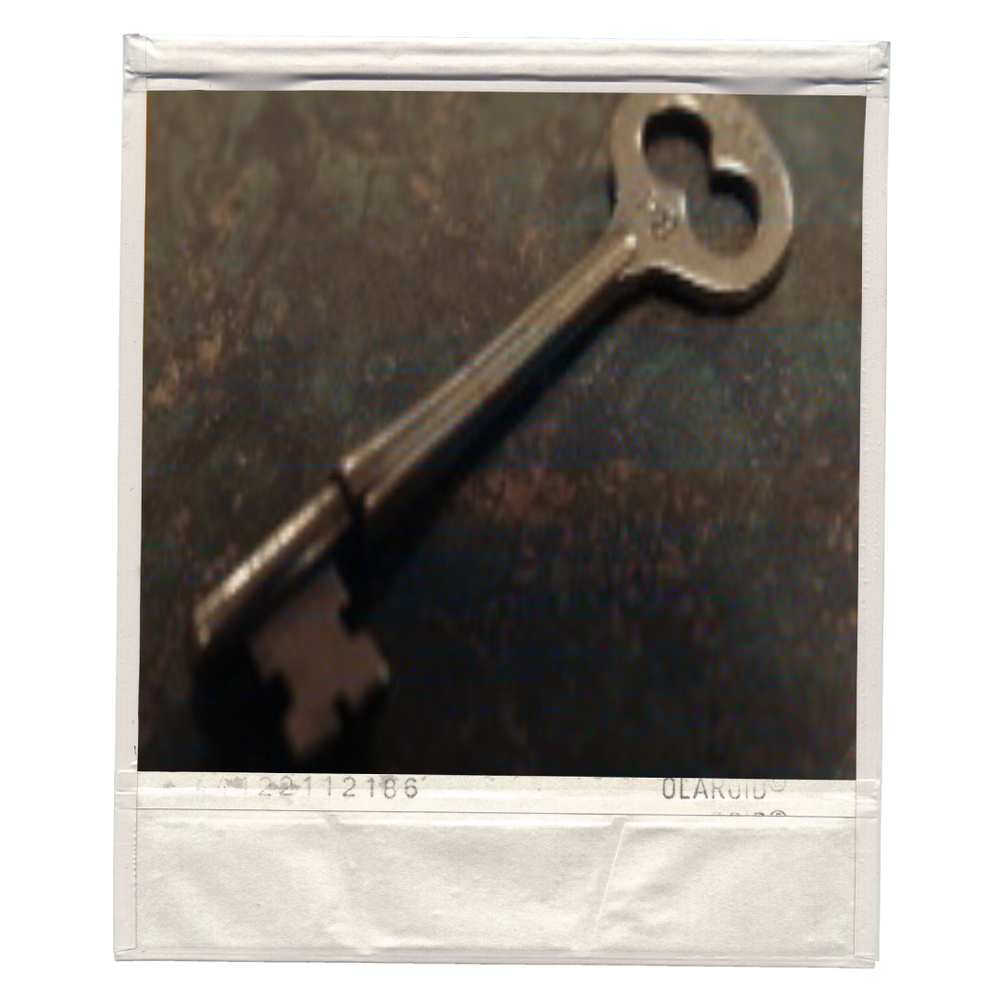

SCP-005 poses no immediate risk in any direct sense. Even so, its unique functions require special measures be taken to restrict access and manipulation of the object. Approval of at least one (1) Level 4 personnel is required for the removal of the object from its containment area.
In appearance, SCP-005 resembles an ornate key, displaying the characteristics of a typical mass produced key used in the 1920s. The key was discovered when a civilian used it to infiltrate a high-security facility. SCP-005 seems to have the unique ability to open any and all forms of lock (See Appendix A), be they mechanical or digital, with relative ease. The origin of this ability has yet to be determined.
SCP-005 may be used as a replacement for lost security passes, but only under the supervision of at least one (1) Level 4 personnel. SCP-005 may not be used for vending machine repairs, opening lockers, or for any personnel's spare home key. Removal of the object from the compound will result in immediate termination.
While SCP-005 has been shown to be effective in removing almost any form of locking device, further experiments have shown that efforts to disguise the purpose or identity of a lock have proven at least somewhat successful in defeating SCP-005's ability. In approximately 50% of cases where a volunteer was not able to identify a locking device as such, SCP-005 was not successful in deactivating the device. Due to these results, SCP-005 has been tentatively classified as 'sentient' and further tests are being run to determine its cognitive abilities. However, there are no results that show any traits that prevent it from being able to identify any particular locking device, only that the aforementioned device has been heavily concealed and disguised.
The Foundation is currently conducting ongoing tests to further understand SCP-005's capabilities and limitations. Updates will follow as more data is collected.